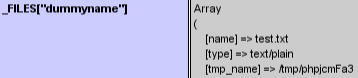

This research combines work done on PHP temporary files and combines it with a race condition in phpinfo() to obtain the tmp filename for inclusion.
The following server side components are required to satisfy this exploitable condition;
- LFI Vulnerability: A local file inclusion vulnerability is required to exploit. This script will be used to include the file uploaded through the PHPInfo script.
- PHPInfo() script Any script that displays the output of the PHPInfo() function will do. In most cases this will be /phpinfo.php
Why PHPInfo()?
The output of the PHPInfo() script contains the values of the PHP Variables, including any values set via
_GET, _POST or uploaded _FILES. This includes finding the filename of temporary files!

Winning The Race
As outlined on the first page, the temporary uploaded file only exists while the PHP processor is operating on the requested .php file, and is deleted at the end of processing.
It can be assumed that if the output of the file has been sent back to the browser, then the PHP processor has finished and the file has been deleted. Although not normally noticeable, it IS possible to retrieve partial output content while the PHP processor is still operating on a requested file.
PHP uses output buffering to increase efficiency of data transfer, by default this is enabled and set to 4096. When output from a PHP script is larger than the output buffer setting, partial content is returned to the requestor using chunked transfer encoding;
To ensure the output of the PHPInfo script is larger than the threshold, and to slightly increase the
processing time, extra padding is included through sending extra HTTP header values of a large length.
By making multiple upload posts to the PHPInfo script, and carefully controlling the reads, it is possible to retrieve the name of the temporary file and make a request to the LFI script specifying the temporary file name. This allows us to win the race, and effectively transform the LFI vulnerability into code execution. This technique has been proven both against local network machines, as well as against remote targets over the Internet.